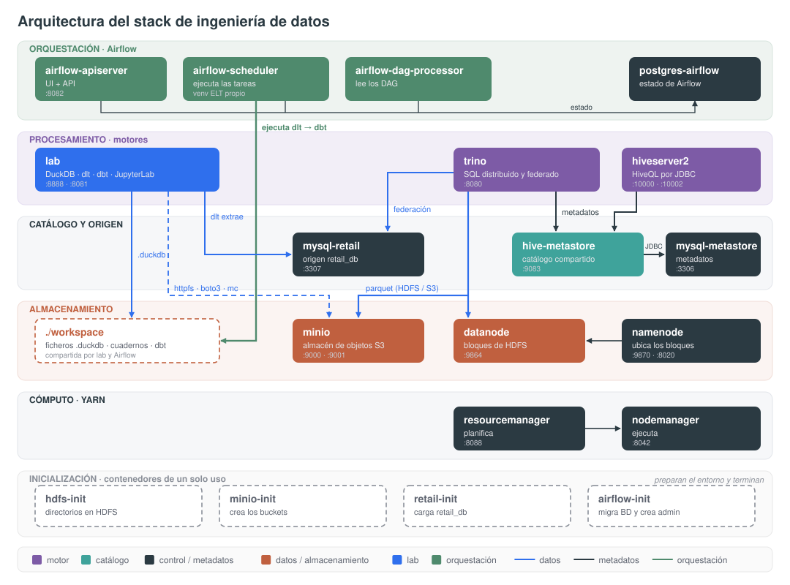
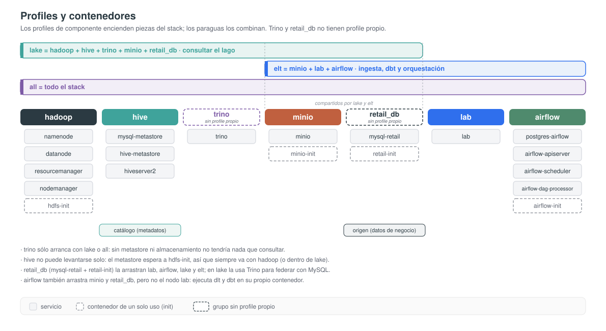

Changelog:
- Nueva creación — Julio 2026
- Actualización — Noviembre 2026: Airflow 3 (
api-serverydag-processor), catálogos de Trino por almacenamiento, nodolabindependiente de MinIO, profiles revisados y versiones actualizadas.
Stack Docker para Ingeniería de datos¶
A lo largo del bloque de ingeniería de datos necesitamos bastantes piezas: un sistema de ficheros distribuido y un almacén de objetos donde dejar los datos, un catálogo que sepa qué tablas hay y dónde viven, varios motores para consultarlos, una base de datos operacional de la que extraer, y un orquestador que lo coordine todo. En vez de instalar cada herramienta por separado, las levantamos con Docker Compose, de manera que con un único comando tenemos un entorno completo y reproducible.
Esta página es la referencia del entorno: qué contiene, cómo se arranca en cada sesión y qué papel cumple cada contenedor. No hace falta leerla de una sentada; vuelve a ella cada vez que una sesión te pida levantar algo nuevo.
Un stack docente, no de producción
Este montaje prioriza que las cosas funcionen a la primera en el aula. Los permisos de HDFS están desactivados, los servicios de Hadoop corren como root, JupyterLab no pide token y todas las credenciales son triviales y están escritas en claro en el fichero .env. En un entorno real ninguna de esas decisiones sería aceptable, pero aquí nos ahorran fricción para centrarnos en lo que nos interesa.
Contenido de la carpeta¶
Todo el stack vive en una carpeta docker-stack con esta estructura:
docker-stack/
├── docker-compose.yml # definición de todos los servicios
├── .env # versiones de las imágenes y credenciales
├── hadoop/
│ ├── config/ # core-site, hdfs-site, yarn-site y mapred-site
│ └── scripts/ # start-hdfs.sh: formatea el namenode sólo la primera vez
├── hive/
│ ├── Dockerfile # Hive + driver JDBC de MySQL + JAR de S3A
│ └── conf/ # core-site (HDFS y MinIO) y hdfs-site
├── trino/
│ ├── catalog/ # un fichero .properties por catálogo
│ └── hadoop/ # configuración del cliente HDFS de Trino
├── duckdb/
│ ├── Dockerfile # imagen del nodo lab
│ └── requirements.txt # duckdb, dlt, dbt, boto3, jupyterlab...
├── airflow/
│ ├── Dockerfile # Airflow + entorno virtual con dlt y dbt
│ └── dags/ # aquí dejamos nuestros DAG
├── sample-data/ # retail_db: create_db.sql, CSV y parquet
└── workspace/ # nuestra carpeta de trabajo (lab y Airflow)
Hay dos carpetas que conviene distinguir. sample-data contiene los datos de partida y se monta en modo sólo lectura, así que nunca la vamos a estropear. workspace, en cambio, es nuestra: empieza vacía y en ella iremos dejando cuadernos, scripts de dlt, proyectos de dbt y ficheros DuckDB sesión a sesión. Como es una carpeta del anfitrión montada en los contenedores, lo que guardemos ahí sobrevive aunque borremos y recreemos el stack.
Arquitectura¶
El stack se organiza en capas. Arriba, la orquestación con Airflow; debajo, los motores con los que trabajamos; después el catálogo y la base de datos de origen; luego el almacenamiento, que aquí tiene tres formas (HDFS, MinIO y la carpeta compartida workspace); y por último el cómputo de YARN. Aparte quedan los contenedores que se ejecutan una sola vez para dejar el entorno preparado.

Si nos fijamos en las flechas, hay tres tipos de tráfico y conviene tenerlos claros desde el principio:
- Las flechas oscuras son de metadatos o de control: Trino le pregunta al metastore qué columnas tiene una tabla y en qué ruta están sus ficheros, y los componentes de Airflow guardan su estado en Postgres.
- Las flechas azules son de datos: una vez conocida la ruta, el motor va directamente a por los ficheros al
datanodeo a MinIO, ydltextrae las tablas demysql-retail. - La flecha verde es de orquestación: el planificador de Airflow ejecuta la tubería dlt → dbt sobre la misma carpeta
workspaceque usamos desde el nodolab.
La separación entre dónde está el dato y el dato en sí es la idea central de un lago de datos, y la volveremos a encontrar en Athena sobre S3 con el catálogo de Glue.
Puesta en marcha¶
Necesitaremos Docker con Docker Compose v2 y, para levantar el stack completo, unos 8 GB de memoria libres. Todos los comandos de esta página se lanzan desde la carpeta docker-stack.
Una vez descargado el zip con todos los archivos, lo descomprimimos en una carpeta de trabajo que nos sea cómoda, ya que accederemos a ella en numerosas ocasiones, ya sea para abrir cuadernos, dejar scripts de dlt o proyectos de dbt, o consultar los ficheros DuckDB. La carpeta workspace se crea vacía la primera vez que arrancamos el stack.
Profiles¶
Este stack tiene diecinueve servicios y rara vez los necesitamos todos a la vez: en la sesión de motores de consulta nos interesan HDFS, Hive y Trino, mientras que en las de ingesta y transformación sólo hacen falta el nodo lab y la base de datos de origen. Para no arrancar de más, todos los servicios están detrás de profiles de Compose. Esto tiene una consecuencia importante: un docker compose up -d a secas no arranca nada; hay que indicarle qué profile queremos.
Hay dos niveles. Los profiles de componente encienden una pieza concreta del stack:
| Profile | Servicios | Para qué |
|---|---|---|
hadoop |
namenode, datanode, resourcemanager, nodemanager, hdfs-init | HDFS + YARN |
minio |
minio, minio-init | Almacén de objetos |
hive |
mysql-metastore, hive-metastore, hiveserver2 | Catálogo de Hive. Necesita hadoop |
lab |
lab, mysql-retail, retail-init | DuckDB + dlt + dbt + JupyterLab, con retail_db |
airflow |
postgres-airflow, airflow-init, airflow-apiserver, airflow-scheduler, airflow-dag-processor | Orquestación (arrastra también MinIO y retail_db) |
Por encima hay tres profiles paraguas que combinan los anteriores, para no tener que recordarlos sesión a sesión:
| Profile | Equivale a | Para qué |
|---|---|---|
lake |
hadoop + hive + trino + minio + retail_db |
Consultar el lago |
elt |
minio + lab + airflow | Ingesta, transformación y orquestación |
all |
todo el stack | Levantarlo entero |
Tres detalles que no se ven a simple vista en las tablas:
- Trino no tiene profile propio: sólo arranca con
lakeo conall, porque sin metastore ni almacenamiento no tendría nada que consultar. hiveno se puede levantar solo. El metastore espera a quehdfs-inithaya creado el directorio del warehouse en HDFS, así que siempre va acompañado dehadoop(o dentro delake).- La base de datos de origen (
mysql-retaily su contenedor de cargaretail-init) tampoco tiene profile propio: la arrastranlab,airflow,lakeyelt, que son todos los escenarios que la necesitan. Enlakeestá porque Trino federa consultas contraretail_dbmediante su conector MySQL.
El siguiente diagrama resume qué contenedores enciende cada profile y cuáles comparten lake y elt:

Arrancar según la sesión¶
El primer paso de cada sesión es elegir qué profile levantamos:
# Formatos, SQL analítico, dlt y dbt: nodo lab + retail_db
docker compose --profile lab up -d
# Almacenamiento distribuido y motores de consulta: HDFS + MinIO + Hive + Trino
docker compose --profile lake up -d
# Orquestación con Airflow: MinIO + lab + Airflow
docker compose --profile elt up -d
# Todo el stack
docker compose --profile all up -d
Los profiles se pueden combinar repitiendo la opción. Por ejemplo, en la sesión de motores de consulta, para comparar Trino y DuckDB sobre el mismo lago, añadimos el nodo lab al escenario lake:
docker compose --profile lake --profile lab up -d
Para comprobar el estado y seguir los logs:
docker compose --profile lake ps
docker compose --profile lake logs -f hive-metastore trino
El primer arranque tarda
La primera vez que levantamos un profile, Docker descarga las imágenes y además construye tres propias: hive-mysql (para hive-metastore y hiveserver2), iabd-de-lab y iabd-de-airflow. Puede llevar varios minutos. Los siguientes arranques ya reutilizan las imágenes.
El arranque está encadenado mediante healthcheck y depends_on, de modo que cada servicio espera a que el anterior esté realmente listo:
- En
lake:namenode→datanode→hdfs-init→hive-metastore(que además espera amysql-metastore) →hiveserver2ytrino. - En
lab:mysql-retail→retail-init→lab. - En
airflow:postgres-airflow→airflow-init→airflow-apiserver,airflow-scheduleryairflow-dag-processor.
Los init acaban en exited
Los contenedores hdfs-init, minio-init, retail-init y airflow-init hacen su trabajo y terminan. Verlos como exited (0) en docker compose ps -a es lo correcto, no es un error.
Parar y volver a arrancar¶
Entre sesiones no hace falta destruir nada. Para apagar y encender el stack usamos stop y start, indicando el mismo profile con el que lo levantamos:
docker compose --profile lake stop
docker compose --profile lake start
docker compose --profile all down elimina los contenedores y la red, aunque conserva los volúmenes con los datos de HDFS, MinIO y las bases de datos. Si además queremos empezar de cero, docker compose --profile all down -v borra también esos volúmenes. La carpeta workspace no se ve afectada en ningún caso.
Servicios y puertos¶
Según el profile activo, tendremos disponibles algunas de estas interfaces desde nuestra máquina:
| Servicio | Puerto | Interfaz |
|---|---|---|
namenode |
9870 · 8020 | http://localhost:9870 (web) · RPC de HDFS |
datanode |
9864 | http://localhost:9864 |
resourcemanager |
8088 | http://localhost:8088 |
nodemanager |
8042 | http://localhost:8042 |
minio |
9001 · 9000 | http://localhost:9001 (consola) · API S3 |
mysql-metastore |
3306 | MySQL (catálogo de Hive) |
mysql-retail |
3307 | MySQL (origen retail_db) |
hive-metastore |
9083 | Thrift |
hiveserver2 |
10000 · 10002 | JDBC · http://localhost:10002 (web) |
trino |
8080 | http://localhost:8080 |
lab |
8888 · 8081 | http://localhost:8888 (JupyterLab) · http://localhost:8081 (documentación de dbt) |
airflow-apiserver |
8082 | http://localhost:8082 |
Fíjate en que los puertos sólo importan cuando accedemos desde fuera. Entre contenedores se hablan por nombre de servicio y puerto interno a través de la red bigdata: desde el nodo lab, MinIO es minio:9000 y la base de datos de origen es mysql-retail:3306, no localhost:3307.
Credenciales¶
Todas están definidas en el fichero .env:
| Servicio | Usuario | Contraseña |
|---|---|---|
| MinIO | minioadmin |
minioadmin123 |
mysql-retail (aplicación, sobre retail_db) |
iabd |
iabd |
mysql-retail y mysql-metastore (administración) |
root |
rootpass |
mysql-metastore (usuario de Hive) |
hive |
hive |
| Airflow | admin |
admin |
Los contenedores¶
Vamos a recorrer cada pieza explicando qué hace y en qué sesión la utilizamos.
namenode y datanode¶
Forman HDFS. El namenode es el cerebro: no almacena ni un solo byte de nuestros ficheros, sino el árbol de directorios y, para cada fichero, la lista de bloques que lo componen y en qué nodos están. El datanode es donde sí viven los bloques, y los sirve directamente a quien se los pida.
Cuando un cliente quiere leer un fichero, el namenode le responde con la ubicación de los bloques, y a partir de ahí el cliente habla directamente con el datanode. Este detalle, que parece menor, explica buena parte del comportamiento de HDFS, y también una de las líneas de configuración del stack: como dentro de Docker las IP internas no son alcanzables desde todas partes, hemos configurado el namenode para que devuelva el nombre del datanode en lugar de su IP.
Hemos fijado la replicación a 1 porque sólo tenemos un datanode; en un clúster real el valor por defecto es 3. El namenode sólo se formatea en el primer arranque, así que el contenido de HDFS se conserva entre sesiones en su volumen.
Los usamos en la sesión de almacenamiento distribuido.
resourcemanager y nodemanager¶
Forman YARN, el gestor de recursos del ecosistema Hadoop. El resourcemanager decide qué trabajos se ejecutan y con cuántos recursos; el nodemanager es quien realmente los lanza. Para verlo en acción podemos lanzar el ejemplo clásico que estima el número π con MapReduce y seguirlo en http://localhost:8088:
docker compose exec resourcemanager bash
hadoop jar /opt/hadoop/share/hadoop/mapreduce/hadoop-mapreduce-examples-*.jar pi 2 10
¿Para qué queremos YARN si vamos a usar Trino?
No es imprescindible, y de hecho ni Trino ni DuckDB lo usan. Lo mantenemos porque es la forma más directa de ver cómo se planifica y ejecuta un trabajo distribuido en el ecosistema Hadoop clásico. Si vas justo de memoria, puedes parar resourcemanager y nodemanager sin que el resto del escenario lake se entere.
minio y minio-init¶
MinIO es un almacén de objetos compatible con la API de S3: nuestro lago de datos "moderno", la alternativa a HDFS. Todo lo que aprendimos sobre S3 aplica aquí, pero corriendo en local. Ofrece la API S3 en el puerto 9000 y una consola web en el 9001.
El contenedor de un solo uso minio-init crea los buckets raw-data, processed y warehouse, que es la separación por capas habitual en un lago (datos crudos, procesados y servidos).
La consola de MinIO es sólo un explorador
El proyecto de código abierto de MinIO se archivó en 2026 y fijamos su última versión oficial. Desde mediados de 2025 la consola web sólo permite navegar por los buckets y los objetos; la administración (usuarios, políticas, etc.) se hace con el cliente mc, que tenemos instalado en el nodo lab.
HDFS y MinIO conviven a propósito
Tener los dos almacenamientos nos permite contrastar el enfoque clásico (HDFS, con el cómputo cerca del dato) frente al moderno (almacén de objetos, con cómputo y almacenamiento separados). Trino puede consultar tablas que viven en cualquiera de los dos.
Los usamos en las sesiones de almacenamiento distribuido, motores de consulta y extracción y carga con dlt.
mysql-retail y retail-init¶
mysql-retail aloja la base de datos retail_db, nuestra tienda ficticia de artículos deportivos, con sus tablas customers, orders, order_items, products, categories y departments. Hace de origen operacional: es la base de datos transaccional de la que extraemos los datos, igual que haríamos en un caso real.
El contenedor retail-init carga retail_db a partir de sample-data/create_db.sql y crea el usuario de aplicación iabd, con permisos de lectura y escritura sólo sobre esa base de datos. Así, dlt, Trino y Airflow se conectan con un usuario propio en lugar de hacerlo como root, que es lo que haríamos en producción.
Para echar un vistazo a los datos de origen:
docker compose exec mysql-retail mysql -u iabd -piabd retail_db
mysql-metastore y hive-metastore¶
hive-metastore es el catálogo. Guarda, para cada tabla, su esquema de columnas, el formato de los ficheros y la ruta donde se encuentran. Lo interesante es que no almacena datos: sólo apunta a ellos, tanto si viven en HDFS como en MinIO. Esos metadatos los persiste en la base de datos metastore de mysql-metastore.
Tenemos por tanto dos contenedores MySQL, y es importante entender por qué están separados, porque cumplen papeles que no tienen nada que ver:
- En
mysql-metastoresólo hay metadatos: qué tablas existen, qué columnas tienen y en qué ruta viven sus ficheros. Ni un solo dato de negocio. - En
mysql-retailsólo hay datos de negocio: los pedidos y clientes de la tienda.
Podríamos haberlo montado todo en un único MySQL, y es tentador porque son la misma tecnología. Pero mezclar el catálogo con el dato de origen confunde dos conceptos que conviene tener bien diferenciados: una cosa es dónde apuntan las tablas y otra muy distinta de dónde vienen los datos. Separarlos también hace que cada profile sea preciso: mysql-metastore sólo aparece donde hay catálogo (hive, lake), y mysql-retail sólo donde se necesita el origen.
El valor del metastore está en que es un catálogo compartido. Una tabla creada desde Trino es inmediatamente visible desde HiveServer2, y lo mismo ocurrirá con Spark en la sesión de conectividad y catálogo.
Una imagen de Hive propia
La imagen oficial de Hive no incluye el driver JDBC de MySQL, ni tiene en su classpath las librerías para leer de S3. Por eso el stack construye una imagen propia (hive/Dockerfile) que añade mysql-connector-j y copia los JAR hadoop-aws y bundle a /opt/hive/lib. Gracias a ellos, Hive puede declarar tablas sobre MinIO usando rutas s3a://.
hiveserver2¶
Nos permite lanzar HiveQL mediante JDBC, típicamente con beeline. Es la puerta de entrada "clásica" al catálogo y la usamos en la sesión de motores de consulta:
docker compose exec hiveserver2 beeline -u 'jdbc:hive2://localhost:10000/'
SHOW DATABASES;
trino¶
Trino es un motor de consultas SQL distribuido pensado para el lago de datos. Se conecta al metastore para saber qué tablas hay y dónde están, y después lee los ficheros directamente de HDFS o MinIO. Su gran virtud es la federación: puede combinar en la misma sentencia datos que viven en sistemas distintos, incluido retail_db en MySQL.
En Trino cada fichero de trino/catalog define un catálogo, y el nombre del fichero es el nombre del catálogo:
| Catálogo | Conector | Apunta a |
|---|---|---|
lago_hdfs |
hive |
Metastore + HDFS |
lago_minio |
hive |
Metastore + MinIO |
mysql |
mysql |
retail_db en mysql-retail |
tpch |
tpch |
Datos sintéticos generados al vuelo |
Los dos catálogos del lago comparten el mismo metastore; lo único que cambia es el sistema de ficheros que saben leer. Para entrar en su cliente:
docker compose exec trino trino
Y para comprobar que todo el circuito funciona, podemos copiar una tabla de tpch al lago y volver a leerla:
CREATE SCHEMA lago_hdfs.demo
WITH (location = 'hdfs://namenode:8020/user/hive/warehouse/demo.db');
CREATE TABLE lago_hdfs.demo.nation WITH (format = 'PARQUET') AS
SELECT * FROM tpch.tiny.nation;
SELECT count(*) FROM lago_hdfs.demo.nation;
Con estas tres sentencias hemos hecho el recorrido completo: Trino ha registrado el esquema y la tabla en el metastore de Hive, ha escrito ficheros Parquet en HDFS y ha vuelto a leerlos.
lab¶
Es nuestro nodo de trabajo, y el que más usaremos. Contiene las tres piezas de un flujo ELT moderno:
- dlt para la extracción y carga (EL).
- DuckDB como motor analítico donde aterrizan y se consultan los datos.
- dbt para las transformaciones (T).
Además trae JupyterLab en http://localhost:8888 (sin token), el CLI de DuckDB, el cliente mc de MinIO y el SDK boto3 junto con el CLI de AWS, de modo que podemos trabajar tanto con cuadernos como con SQL puro o desde el terminal:
docker compose exec lab bash
Unos cuantos detalles de la imagen nos van a ahorrar trabajo:
- Las variables
AWS_*ya apuntan a MinIO, así queboto3yawsfuncionan sin configurar nada, ymctrae preconfigurado el aliaslocal(mc ls local/). - Las variables
MYSQL_HOST,MYSQL_USERyMYSQL_PASSWORDcontienen los datos de conexión aretail_db. - Las extensiones
httpfs,mysqlyparquetde DuckDB vienen instaladas en la imagen, así que no dependemos de descargarlas en el aula. DBT_PROFILES_DIRapunta a/workspace/dbt/iabd, que es donde dbt busca el ficheroprofiles.yml.- El puerto 8081 está reservado para servir la documentación de dbt (
dbt docs serve --host 0.0.0.0 --port 8080).
El nodo lab no depende de MinIO: arranca solo con su profile, y para trabajar contra el lago basta con añadir minio (o lake). Lo usamos en las sesiones de formatos de datos, SQL analítico, modelado dimensional, motores de consulta, dlt y dbt.
Contenedores nativos en Apple Silicon
Las imágenes de Hadoop y Hive sólo se publican para amd64, así que en un Mac con chip M se ejecutan emuladas y van más lentas. Las de lab, MySQL, MinIO, Trino, Airflow y Postgres, en cambio, son multiarquitectura y corren de forma nativa.
Airflow¶
Es nuestro orquestador. En el nodo lab lanzamos el ELT a mano (primero dlt, luego dbt); Airflow nos permite encadenar esos pasos en un DAG, programarlos, reintentarlos si fallan y ver de un vistazo qué se ha ejecutado y con qué resultado. Lo trabajamos en la sesión de orquestación con Airflow.
Usamos Airflow 3, que reparte el trabajo en varios componentes. El profile airflow levanta cinco contenedores:
| Contenedor | Función |
|---|---|
postgres-airflow |
Base de datos de metadatos de Airflow (Postgres 16) |
airflow-init |
Construye la imagen, migra la base de datos y crea el usuario admin |
airflow-apiserver |
Interfaz web y API REST, en http://localhost:8082 |
airflow-scheduler |
Planifica los DAG y ejecuta sus tareas (LocalExecutor) |
airflow-dag-processor |
Lee y analiza los ficheros de airflow/dags |
Los DAG se dejan en la carpeta airflow/dags del stack, y aparecen en pausa al crearse, así que hay que activarlos desde la interfaz.
Lo importante es entender dónde se ejecuta el ELT cuando lo lanza Airflow: no en el nodo lab, sino en el propio airflow-scheduler. La imagen de Airflow incluye un entorno virtual en /opt/airflow/elt con las mismas versiones de dlt, dbt y DuckDB que el lab, y las tareas lo invocan mediante la variable $ELT_BIN (por ejemplo, $ELT_BIN/dbt run). Como ambos contenedores montan la misma carpeta workspace, el DAG ejecuta exactamente los mismos scripts y escribe en los mismos ficheros DuckDB que usamos a mano.
¿Por qué un entorno virtual aparte?
Airflow no importa dlt ni dbt: los ejecuta como comandos, igual que haríamos nosotros desde el terminal. Instalarlos en un entorno propio evita choques de dependencias entre ambos mundos, que de hecho se han dado: dbt-core y las restricciones de instalación de Airflow han llegado a exigir versiones incompatibles de la librería pathspec.
Un fichero DuckDB, un escritor
DuckDB sólo admite un proceso escribiendo en el mismo fichero a la vez. Si un DAG está ejecutando dbt run y a la vez tenemos el mismo fichero abierto desde un cuaderno o desde el CLI en el lab, una de las dos partes fallará al intentar bloquearlo. Antes de lanzar un DAG, cierra las conexiones al fichero desde el lab, y cuando sólo vayas a consultar, ábrelo con -readonly para no dejarlo bloqueado.
Le damos a Airflow un Postgres dedicado en lugar de reutilizar alguno de los MySQL para no mezclar el estado del orquestador con nuestros datos, igual que haríamos en producción.
Los contenedores de inicialización¶
hdfs-init, minio-init, retail-init y airflow-init son contenedores de un solo uso:
hdfs-initcrea en HDFS los directorios/user/hive/warehousey/tmpcon permisos abiertos.minio-initcrea en MinIO los tres buckets del lago.retail-initcargaretail_dbenmysql-retaily crea el usuarioiabd.airflow-initmigra la base de metadatos de Airflow y crea el usuarioadmin.
Todos son idempotentes: si se vuelven a ejecutar en un arranque posterior, no rompen lo que ya existe. Este patrón, un contenedor que prepara el entorno y termina, es muy habitual y evita tener que documentar pasos manuales que alguien acabará olvidando.
Versiones¶
Todas las versiones están fijadas en el fichero .env, de modo que el entorno es el mismo en todos los equipos del aula:
| Componente | Versión |
|---|---|
| Hadoop | 3.4.1 |
| Hive | 4.1.0 |
| Trino | 482 |
| MySQL | 8.0 |
| MinIO | RELEASE.2025-09-07T16-13-09Z |
| DuckDB | 1.5.6 |
| dlt | 1.32.0 |
| dbt Core / dbt-duckdb | 1.12.3 / 1.11.0 |
| Airflow | 3.4.0 |
| Postgres | 16 |
El recorrido ELT completo¶
Una vez completadas las sesiones de dlt y dbt, en la carpeta workspace tendremos un pipeline que recorre las tres letras de ELT de principio a fin. Con el profile lab levantado, lo podemos ejecutar a mano:
docker compose --profile lab up -d
docker compose exec lab bash
Y ya dentro del contenedor:
# EL: dlt replica retail_db en DuckDB, en el esquema raw
python /workspace/dlt/retail_el.py
# T: dbt transforma, de staging a marts
cd /workspace/dbt/iabd_retail
dbt run
# Consultamos el resultado
duckdb -readonly /workspace/dbt/iabd/retail_el.duckdb -c "SELECT * FROM ingresos_por_departamento"
Fijémonos en el reparto de responsabilidades: dlt no transforma nada, se limita a traer los datos tal cual están en origen. Y dbt no sabe nada de extracción, sólo transforma lo que ya está cargado. Esa separación es precisamente lo que distingue ELT de ETL, concepto que introducimos en la sesión de ingesta de datos. Una vez que el recorrido funciona a mano, en la sesión de Airflow lo convertimos en un DAG que encadena estos mismos pasos y añade las pruebas de dbt.
Referencias¶
- Documentación de Docker Compose sobre profiles.
- Documentación de Trino y de sus conectores Hive y MySQL.
- Documentación de DuckDB, dlt y dbt.
- Documentación de Airflow y su guía de ejecución con Docker Compose.
- Documentación de boto3, el SDK de AWS para Python.
- Imágenes oficiales de Apache Hadoop y Apache Hive en Docker Hub.